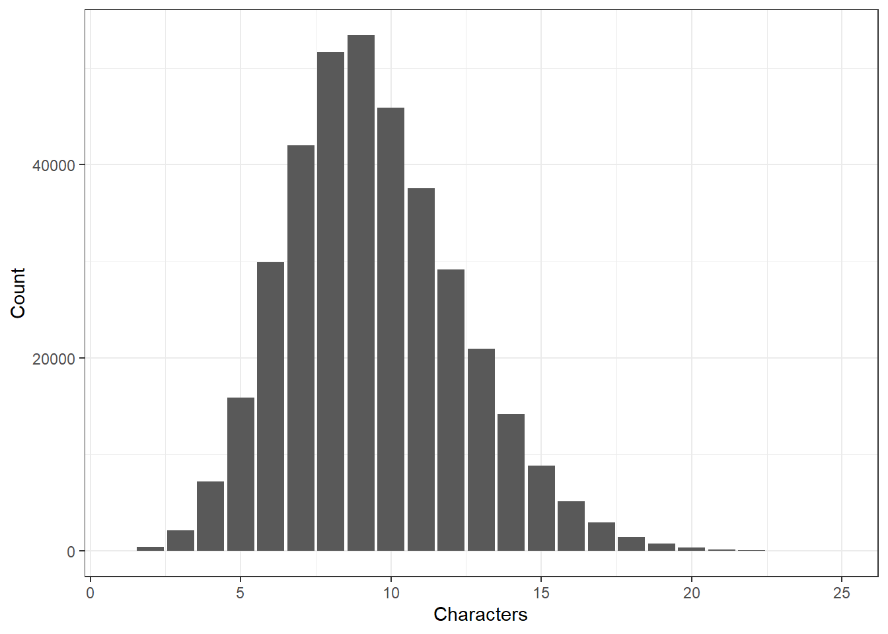
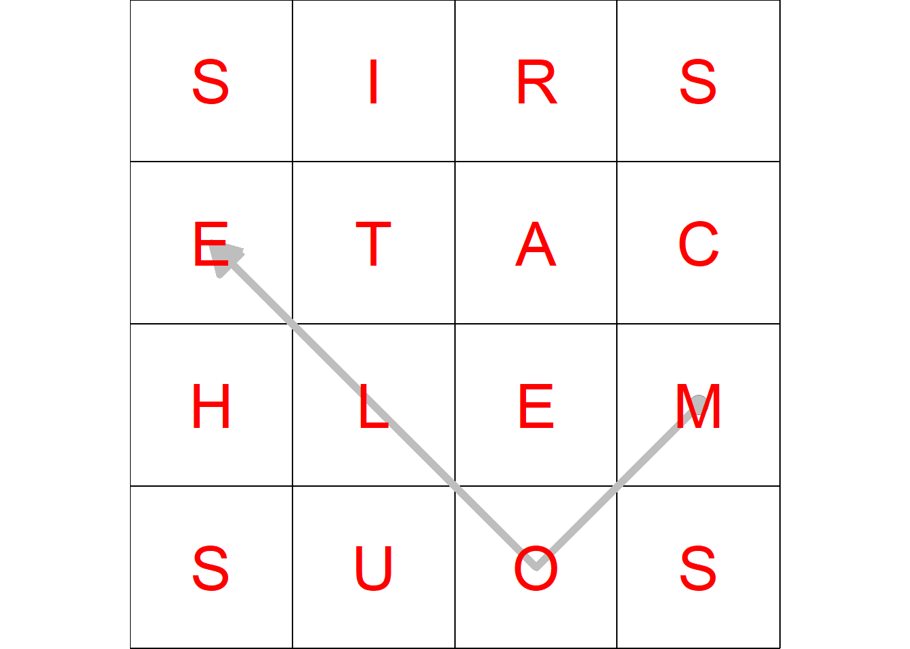

board <-
c("s", "i", "r", "s",
"e", "t", "a", "c",
"h", "l", "e", "m",
"s", "u", "o", "s")Wordament Solver
R
Get help finding potential Wordament words.
Sometimes in Microsoft Wordament daily challenges, there’s an awkwardly placed letter the game seems to pick on relentlessly . For situations like this, some word suggestions would be nice. I don’t have the official dictionary of valid Wordament words, so I’ll just have to get a reasonably large English word list. My algorithm isn’t going to accommodate board tiles that are prefixes, suffixes, or either-or tiles like b/u because it adds a fair amount of complexity to the code, and those kinds of tiles are almost never problematic.
Board Setup
First, though, I’ll consider the 4x4 game board as just a vector of characters from left to right and top to bottom, just like you’d read a book. Therefore, the board (and vector) will have the the following indices:
| 1 | 2 | 3 | 4 |
| 5 | 6 | 7 | 8 |
| 9 | 10 | 11 | 12 |
| 13 | 14 | 15 | 16 |
An example board is:
Using the same indexing scheme, I create an adjacency list. The first item in the list is a vector of the board tiles that are adjacent to index 1. The second item in the list are the tiles adjacent to index 2, and so on.
adj <- list(
c(2,5,6),
c(1,3,5,6,7),
c(2,4,6,7,8),
c(3,7,8),
c(1,2,6,9,10),
c(1,2,3,5,7,9,10,11),
c(2,3,4,6,8,10,11,12),
c(3,4,7,11,12),
c(5,6,10,13,14),
c(5,6,7,9,11,13,14,15),
c(6,7,8,10,12,14,15,16),
c(7,8,11,15,16),
c(9,10,14),
c(9,10,11,13,15),
c(10,11,12,14,16),
c(11,12,15)
)
adj[[1]] # tiles adjacent to tile 1[1] 2 5 6Create Valid Sequences
The first way I thought of to tackle this problem is to generate all valid two-tile sequences using the above adjacency list. Once I have valid two-tile sequences, I can use those to generate valid three-tile sequences, and so on. I begin with index 1 from the adjacency list, which tells me that valid two-tile combinations for tile 1 are 1-2, 1-5, and 1-6. I put all of those in a two column matrix where column 1 is the first tile in the sequence, and column 2 is the second tile. I convert that 3x2 matrix into a dataframe so I can row bind it with the dataframe for tile 2, then tile 3, etc.
library(dplyr)
library(purrr)
s2 <-
seq_along(adj) %>%
map_dfr(~as.data.frame(
matrix(
c(rep(.x, length(adj[[.x]])), adj[[.x]]),
byrow=FALSE, ncol = 2)
)
)
head(s2)Things get just a little more complicated for 3+ tile sequences, but it’s the same process for each successively longer sequence, so I’ll make a function get_tiles() to do it. For three-tile sequences, I’ll iterate through each row of two-tile sequences, look up the last number in the sequence, get it’s associated adjacency list, and remove tiles that have already been visited in the sequence. First the three-tiles sequences.
get_tiles <-
function(adj_list, prev_sequence){
1:nrow(prev_sequence) %>%
map_dfr(function(x){
# get the shorter input sequence
left_seq <- as.matrix(prev_sequence[x, ])
# get candidate adjacent tiles
adj_cand <- adj_list[[prev_sequence[x, ncol(prev_sequence)]]]
# remove tiles that have already been visited
adj_unique <- adj_cand[!adj_cand %in% left_seq]
# plop it in a dataframe
as.data.frame(
matrix(
c(rep(left_seq, each = length(adj_unique)), adj_unique),
byrow=FALSE, ncol = ncol(prev_sequence) + 1
)
)
})
}
s3 <- get_tiles(adj, s2)
head(s3)And then four-tile sequences. I’m not going to go beyond that for this post because you get the idea by now .
s4 <- get_tiles(adj, s3)
head(s4)Load A Dictionary
I downloaded an open source English language dictionary a few years ago for another project, but I don’t remember where I got it from. It’s a simple JSON file containing 370,101 words, and that’s it. Here are the first eight words.
dict <- jsonlite::fromJSON("words_dictionary.json") %>% names()
dict[1:8][1] "a" "aa" "aaa" "aah" "aahed" "aahing" "aahs" "aal" While we’re at it, I’m curious about the distribution of word lengths. How many 3-letter words are there compared to 4-, and 5-, etc. letter words?
library(ggplot2)
tibble(Word = dict) %>%
mutate(Characters = nchar(Word)) %>%
group_by(Characters) %>%
tally %>%
ggplot() +
geom_col(aes(x=Characters, y=n)) +
theme_bw() +
xlim(1, 25) +
ylab("Count")
Interesting! There are more 9-letter words than any other word length - I was guessing the most common word length was shorter.
Tile Coordinates
Ultimately, I want to be able to plot the game board and, for a valid word, overlay an arrow showing which tiles make up that word. That means I need to map each tile to an (x, y) coordinate pair. Tile 13 (an s) is in the lower left, so it will have an (x, y) coordinate of (1, 1). Tile 14 will be (2, 1), etc.
tile_coords <- expand.grid(1:4, 1:4)
colnames(tile_coords) <- c("x", "y")
tile_coords <- tile_coords %>%
mutate(tile = c(13, 14, 15, 16, 9, 10, 11, 12, 5, 6, 7, 8, 1, 2, 3, 4),
letter = c(board[13:16], board[9:12], board[5:8], board[1:4]))
head(tile_coords)Valid Words
Now it;s time to put everything together. I have all of the possible tile sequences, and each sequence will generate a word. Not all of those words will be valid English words, in which case I’ll drop that sequence. While I’m at it, need to keep track of tile coordinates for plotting later. Sounds simple enough, and my first approach involved some nested loops to iterate through tile sequences and tile coordinates. It worked, but it was way too slow once I got to 5-letter words, and it was only going to get worse with longer words since there are so many more of them. Instead of looping, I went with an approach of switching between wide and long data so that I could to column-wise operations, which is much faster.
library(tidyr) # for pivoting and unite
get_valid_words <- function(df){
df_new <- df %>%
# add a column to track like tile sequences
mutate(sequence = row_number()) %>%
# convert to long data
pivot_longer(-sequence, values_to = "tile") %>%
# for each tile, add the corresponding letter from the board
left_join(tile_coords %>% select(-x, -y), by = "tile") %>%
select(-tile) %>%
# convert back to wide data
pivot_wider(names_from = name, values_from = letter) %>%
# concatenate individual letters into a single word
unite(col = "term", -sequence, sep="") %>%
# drop words not in the dictionary
filter(term %in% dict[nchar(dict)==ncol(df)]) %>%
# drop duplicate words
distinct(term, .keep_all = TRUE)
df_new %>%
# add the tile sequence number
bind_cols(df[df_new %>% .$sequence, ]) %>%
select(-sequence) %>%
# convert to long data again
pivot_longer(-term, values_to = "tile") %>%
# attach tile coordinates to get line segments.
left_join(tile_coords %>% select(-letter), by = "tile")
}
valid_4 <- get_valid_words(s4)
head(valid_4)Now I have the data in the form needed for plotting: each valid word and coordinates for each tile/letter in the proper order.
Visualize
Here’s an initial stab at plotting one valid word “mole”.
ggplot() +
geom_vline(xintercept = 0.5) +
geom_vline(xintercept = 1.5) +
geom_vline(xintercept = 2.5) +
geom_vline(xintercept = 3.5) +
geom_vline(xintercept = 4.5) +
geom_hline(yintercept = 0.5) +
geom_hline(yintercept = 1.5) +
geom_hline(yintercept = 2.5) +
geom_hline(yintercept = 3.5) +
geom_hline(yintercept = 4.5) +
coord_fixed() +
scale_x_continuous(expand = c(0, 0)) +
scale_y_continuous(expand = c(0, 0)) +
geom_point(data = valid_4 %>% filter(term=="mole") %>% slice(1),
aes(x=x, y=y),
alpha = 0.25, size = 5) +
geom_path(data = valid_4 %>% filter(term=="mole"),
aes(x=x, y=y, group=term),
arrow = arrow(type = "closed"), color = "gray", linewidth = 2) +
geom_text(data = tile_coords,
aes(x=x, y=y, label=toupper(letter)),
color="red", size= 12) +
theme_void()
Now that I have the basic functionality worked out, I can leverage all this in a Shiny app so that a user can input whatever board letters they need help with.